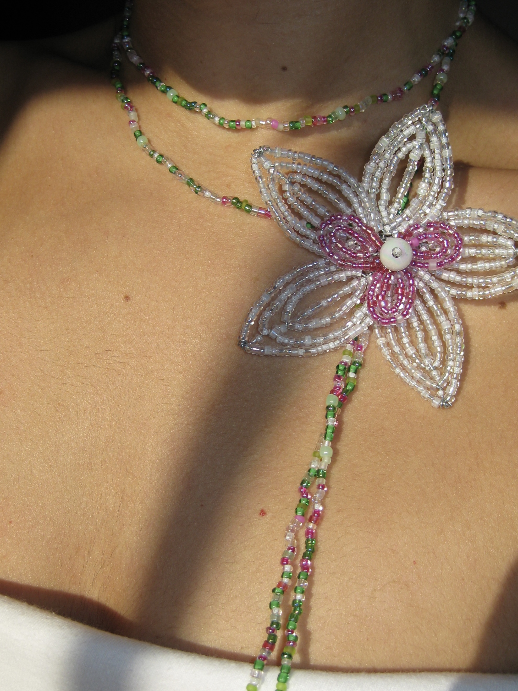
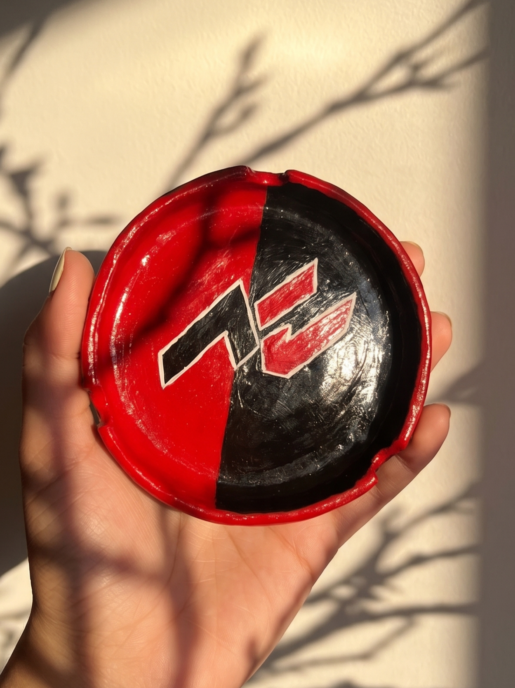

Artesanía única hecha a mano con amor
Diseños originales con abalorios, cerámica y colecciones con su propia esencia.
Creaciones únicas

Corazón de Orquídea
Colección Collares

Top Primavera
Colección Crochet

Cenicero personalizado
Colección Cerámica
Detrás de las puntadas
¡Hola! Soy Candela. CCS Handmade nace en Córdoba de la pasión por el crochet, la cerámica y las cosas hechas despacio y con amor. Cada pieza que ves aquí está creada 100% a mano, buscando transmitir esa calidez tan cozy de lo artesanal. ¡Gracias por apoyar este pequeño gran proyecto!